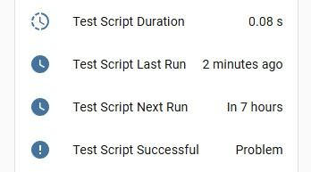
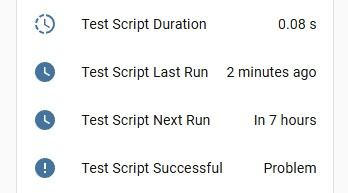

Scheduled Tasks¶
One of System Link's coolest features is its ability to be used as a script runner with tight integration into Home Assistant.
This is done using cron switches, which allow you to run scripts on a schedule, or on-demand, and report to Home Assistant about their status, execution time, next/last run, error messages, and more.
You can also combine this with custom sensors to send data back to Home Assistant from your scripts.
Here's an example dashboard card you can create to monitor your scheduled tasks:

Entity images
 

Dashboard configuration
I use Mushroom cards here, but you could easily recreate this with standard tile cards.
type: grid
cards:
- type: heading
heading: CommBank
heading_style: title
icon: mdi:bank
- type: custom:mushroom-chips-card
chips:
- type: entity
entity: switch.pyscripts_test_script
icon_color: primary
icon: mdi:script-text-play
- type: entity
entity: button.pyscripts_test_script_run
tap_action:
action: more-info
hold_action:
action: none
double_tap_action:
action: none
content_info: none
name: Run
icon_color: red
icon: ""
- type: tile
entity: sensor.pyscripts_test_script_duration
name: Duration
color: primary
hide_state: false
vertical: false
features_position: bottom
- type: tile
entity: binary_sensor.pyscripts_test_script_successful
name: Status
vertical: false
features_position: bottom
- type: tile
entity: sensor.pyscripts_test_script_last_run
name: Last Run
color: primary
vertical: false
features_position: bottom
- type: tile
entity: sensor.pyscripts_test_script_next_run
name: Next Run
color: primary
vertical: false
features_position: bottom
- type: markdown
content: >
{% set entity_id = "binary_sensor.pyscripts_test_script_successful"
%}
{% set stderr = state_attr(entity_id, "stderr") %}
{% set stdout = state_attr(entity_id, "stdout") %}
{% if stdout %}
#### Output
```
{{ stdout }}
```
{% endif %}
{% if stderr %}
#### Error
```
{{ stderr }}
```
{% endif %}
#### Exit Code: {{ state_attr(entity_id, "code") or 0 }}
visibility:
- condition: state
entity: binary_sensor.pyscripts_test_script_successful
state: "on"
My rambling
I've tried a lot of other ways to integrate scripts with Home Assistant, but this is by far the easiest and most robust way I've found, short of actually building custom integrations for HA, which I have done for various services, but it is a lot more work.
I've also tried using HA's rest commands, rest sensors, custom scripts that send data back via mqtt to HA with custom mqtt sensors. I also built a custom healthchecks integration, tried uptime kuma. But they all required a lot more work or lacked important features (like support for dependencies).
This finally allows me to just write simple scripts that can be detached from HA, use whatever deps I need, install the deps/python version I want on the fly, and easily integrate monitoring and results back into HA.
It's a great extension of system links core features of monitoring and basic remote control. I realised I could make it completely manage and return data from my scripts, obsoleting some of my old more custom methods. I'd be curious to hear the community's thoughts on this approach, and how I can improve it even further.
Python Scripts & Dependencies¶
The docker container for System Link includes both Python and UV.
UV is a really fast python manager, with a lot of useful features. It handles python workspaces, installing deps, installing python versions of the fly, and more.
In particular, inline metadata for dependencies is really useful here. This allows you to declare dependencies at the top of your script file, and uv will automatically install them when the script is run and then cache them for future runs.
This means the first run of the scheduled script might be a bit slower, but it also means you don't have to install dependencies locally using a venv or bake them into your docker image yourself.
Tip
It particularly shines for simple scripts you may write as you can pin the deps and python version right there in the script file, and uv will install them automatically and run the script for you in a isolated environment. Meaning you don't have to worry about dependency conflicts with other scripts.
Here's a simple example, but check uv docs for more info.
# /// script
# requires-python = ">=3.13"
# dependencies = [
# "beautifulsoup4==4.13.3",
# "cryptography==44.0.1",
# "requests==2.32.4",
# ]
# ///
import json
import logging.handlers
from os import getenv
from cryptography.fernet import Fernet
from commbank import Client
# ...
Guide¶
For this example we are going to create a script to pull our bank account information from CommBank, using the System Link docker container.
First, let’s set up the basic config, with a cron switch and a custom sensor for the account information.
- We're using Docker, so you don't need most of the other buttons (shutdown, exit, etc.).
- The
commandreturns a JSON string; Home Assistant will parse it andvalue_templateextracts thebalance. - Extra fields to include in the sensor's attributes.
Now we can create a script to pull the data from CommBank and write a JSON file with the results.
- This is based on a lib I threw together a long time ago jcwillox/commbank-api, it's not something I really maintain, but the source is there. You could also spin up a headless browser or call any other APIs you like.
Adding extra logging
You can also add extra logging to your script and write it to a file.
import logging
import logging.handlers
# Setup logging
_LOGGER = logging.getLogger("commbank")
_LOGGER.setLevel(logging.DEBUG)
handler = logging.handlers.RotatingFileHandler(
"/app/commbank/commbank.log", maxBytes=1000000, backupCount=3
)
formatter = logging.Formatter(
"%(asctime)s %(levelname)s [%(name)s] %(message)s", "%Y-%m-%d %H:%M:%S"
)
handler.setFormatter(formatter)
_LOGGER.addHandler(handler)
def main():
_LOGGER.info("Starting CommBank script")
# ...
_LOGGER.info("Successfully retrieved account data")
if __name__ == "__main__":
try:
main()
except Exception as ex:
_LOGGER.exception("Error in main method, script aborted!\n\n")
raise ex
Docker setup¶
Below are concise examples for organizing scripts, running the container, and a docker-compose service you can adapt.
- File layout
/pyscripts
├─ config.yaml # config file
├─ logs/ # log directory
└─ app/
└─ commbank/
├─ commbank.py # script file
└─ account.json # output file written by the script
- Starting the container